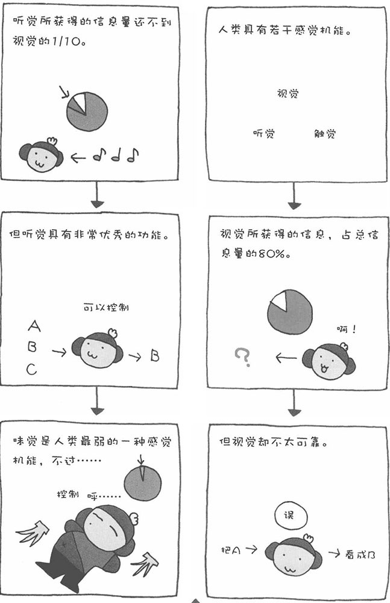

我们人类通过眼睛、耳朵、鼻子、嘴巴等器官获取外部信息，然后通过大脑对获得的信息进行判断。识别信息的这个工作过程就叫做"知觉"。不同的人在获得同一信息的时候，有可能采取同一行为，也可能各自采取不同的行为。在这一节中，我将为大家介绍几种具有代表性的感觉机能。
■ 视觉/视网膜细胞受到光的刺激
视觉是所有感觉机能中获得信息量最大的一种。虽然存在个人差异，但一般情况下，我们人类获得的信息中，有80%来自视觉。然而，视觉也是最靠不住的一种感觉，它经常出错。
■ 听觉/空气振动从鼓膜传到内耳
人类听觉获得的信息量排在所有感觉机能中的第二位，但其获得的信息量还不足视觉的1/10。人类的视觉只能看到正面一定角度范围之内的事物，而听觉可以不受方向的限制，听到四周的声音。不过，有时听觉也会出错。
■ 触觉/皮肤上的感觉点受到刺激
触觉可以通过直接接触获得信息。触觉与视觉、听觉不同，不容易出错。特别是指尖的触觉最为敏感。
■ 嗅觉/空气中的粒子刺激鼻子内的嗅觉细胞
人类的嗅觉经常和记忆、精神有较强的联系。当闻到特定的气味时，可能会让我们想起某一段回忆；当闻到花的芳香时，能让人神清气爽。嗅觉是一种原始的感觉，与动物相比，我们人类的嗅觉机能比较弱。
■ 味觉/刺激物刺激舌头上的味蕾
味觉是人类所有感觉机能中最弱的一种。味觉与人的本能有较强的联系，有很多人会追求味觉的刺激。人类的舌头是掌管味觉的唯一器官。
